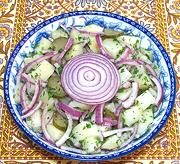

|
Potato Herb SaladTurkmenistan - Ter Otly Kartoska | ||||
| Makes: Effort: Sched: DoAhead: |
2-1/4 # * 1+ hrs Best |
This is a very nice non-dairy potato salad with good lemon and herb flavor. It can be served lightly chilled or at room temperature. 2-1/4 pounds should serve around 6 salads. | |||
|
|
2 3-1/2 7 1 1 ------- 1 3-1/2 4-1/2 1 |
# oz oz T T --- cl T T t |
Potatoes (1) Dill Pickles (2) Red Onion Parsley, flat Dill, fresh -- Dressing Garlic Lemon Juice Oil (3) Salt |
Make - 35 min + cool time - 25 min work)
|